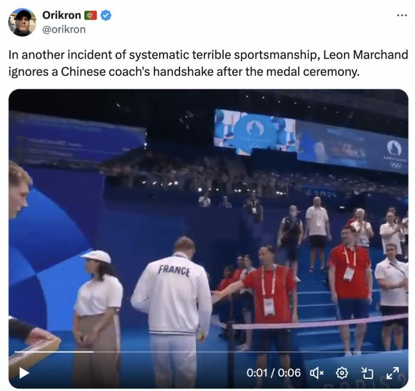

奥运会上的游泳赛事一直是全世界瞩目的。本届巴黎奥运会上，法国游泳运动员莱昂-马尔尚（Leon Marchand）大放异彩，成为历史上第四位在一届奥运会上赢得四枚个人奖牌的游泳运动员。
然而，他的一个举动却招来世界的批评！
事情发生在男子200米个人混合泳的颁奖仪式之后，马尔尚在这个项目中拿到金牌，并且打破了奥运会纪录。中国选手汪顺获得铜牌。
当马尔尚在颁奖仪式上路过汪顺的交流朱志根时，朱教练友好地想跟他握手，马尔尚却直接无视他，钻过胶带隔离带，继续走向领奖台，全程零回应，从朱教练身边走过，也没有回握手。
马尔尚的这一举动在推特上也冲上了热搜。
无数网友声讨他没有礼貌，没有尊重，还有网友说他这是种族歧视。
“现在这样的时刻中国队根本不应该离他们，如果他们不表示友好，也不要对他们表示友好。”
“中国教练表现出了优雅和尊严，马尔尚这件事做的太不光彩了，感谢中国。”
“不奇怪，他是法国人。”
谷爱凌作为该品牌的代言人，也在之前马尔尚获得金牌后对他留言祝贺“incredible”，但是握手事件出来后，谷爱凌马上删除了评论。
除了在网络论坛上发酵，还有很多人跑到他代言的某全球知名奢侈品社交媒体上发布负面留言。
“他能代表这个品牌吗？”
“种族歧视！”
品牌方也是连夜删除了很多评论。
不知道是迫于压力还是终于意识到行为不对，马尔尚昨天做出来回应。
他主动找到中国游泳队道歉，表示此前低腰用手拉隔离带，并没有看到教练上前握手，对此表达歉意。
类似的事件几天前也发生了。中国游泳运动员，男子100米自由泳世界纪录保持者潘展乐在接受采访时表示，澳大利亚选手查尔莫斯（Kyle Chalmers）冷落他，潘给他打招呼他完全无视不理。
至于这些选手到底是真的没有注意到，还是傲慢，每个人自己心里都有所评判吧。